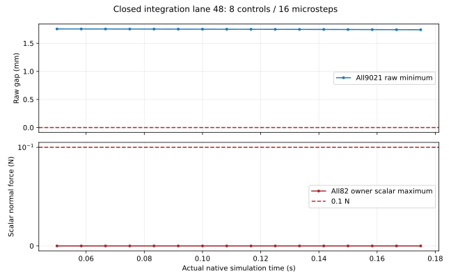

initial · step -1 / sub None
实际原生时间 0.041666668839752674 s；原生时钟 5。完整 state／全部相机尝试


返回完整结果 · 状态 048
开发集，8 控制步／16 物理步。不能计作完整安全窗口。
原始几何失败：False；逐点标量力失败：False；前 6 控制步主判据：True。每组所有相机尝试均保留。

下载全部 74 自由度原生 q/qd、实际时钟与逐物理步曲线
实际原生时间 0.041666668839752674 s；原生时钟 5。完整 state／全部相机尝试
实际原生时间 0.17500000912696123 s；原生时钟 21。完整 state／全部相机尝试